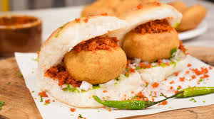

Vadapav

Description
It is a popular street food and a staple of Maharashtra state in India. Vada pav is often termed a thrifty, affordable, or economical Indian burger prepared with basic ingredients to match the local desi taste buds
Ingredients
- 2 tsp oil
- ½ tsp mustard
- pinch of hing / asafoetida
- few curry leaves
- 1 inch ginger, crushed
- 2 clove garlic, crushed
- 1 chilli, finely chopped
- 2 tbsp coriander, finely chopped
- ¼ tsp turmeric / haldi
- potato / aloo, boiled & mashed
- ½ tsp salt
- 1 tbsp lemon juice
- ¾ cup besan / gram flour
- 1 tbsp rice flour
- ¼ tsp turmeric
- ¼ tsp kashmiri red chilli powder
- pinch of asafoetida
- 1/2 tbsp baking soda
- 1 cup water/li>
- oil for deep frying
- 6 pav buns
- 6 chillies
- 3 tbsp green chutney
- 3 tbsp tamarind chutney
Steps
- Firstly, in a large kadai heat 2 tsp oil and splutter ½ tsp mustard, a pinch of hing and a few curry leaves.
- Also add 1-inch ginger, 2 clove garlic, 1 chili, and 2 tbsp coriander and saute well.
- Further, add ¼ tsp turmeric and saute for 30 seconds.
- Additionally, add 2 boiled and mashed potatoes and ½ tsp salt.
- Mix well making sure all the spices are combined well with the potato.
- Turn off the flame and add 1 tbsp lemon juice.
- Mix well and the aloo mixture is ready. Keep aside.
- Further, prepare besan batter by taking ¾ cup besan, 1 tbsp rice flour, ¼ tsp turmeric, ¼ tsp chili powder, a pinch of hing, ¼ tsp salt, and ¼ tsp baking soda.
- Add ½ cup water or as required and prepare the smooth lump-free batter
- Now make a ball-sized aloo mixture. I like my vada to be round rather than flat, flatten the balls slightly if you prefer.
- Dip in prepared besan batter and coat well.
- Deep fry in hot oil stirring occasionally,fry till vada turns golden and crisp
- Drain the vada on kitchen paper to absorb excess oil. keep aside
- Now fry the green chilli, by turning off the flame
- Now slit the pav bun center halfway without cutting fully.
- Spread 1 tsp green chutney, ½ tsp tamarind chutney, and ½ tsp dry garlic chutney on one side of the inside pav.
- Place the prepared vada in the center of the pav
- Finally, press the vada pav and serve immediately
Home